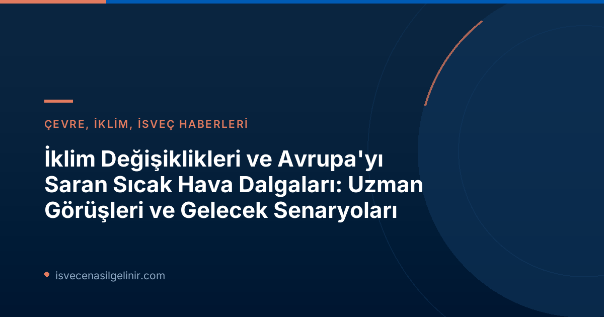

İklim Değişiklikleri ve Avrupa'yı Saran Sıcak Hava Dalgaları: Uzman Görüşleri ve Gelecek Senaryoları
Avrupa kıtası, son dönemde yaşadığı şiddetli sıcak hava dalgalarıyla adeta kavruluyor ve bu durum, yeni sıcaklık rekorlarının kırılmasına neden oluyor. Özellikle İspanya gibi ülkelerde art arda yaşanan üçüncü sıcak hava dalgası uyarıları, termometrelerin 45 dereceyi gösterdiği zorlu günler yaşanacağını işaret ediyor. Peki, bu aşırı sıcaklar sadece bir tesadüf mü, yoksa küresel iklim değişiklikleriyle doğrudan bir bağlantısı mı var? İsveç Televizyonu (SVT) meteoroloji uzmanı Nils Holmqvist, konuya ilişkin 'Büyük ihtimalle evet' diyerek çarpıcı bir açıklama yapıyor. Bu kapsamlı rehberimizde, iklim değişiklikleri ve Avrupa'yı etkisi altına alan sıcak hava dalgaları arasındaki ilişkiyi, uzman görüşleri ışığında detaylıca inceleyecek ve geleceğe dair öngörülerde bulunacağız. İsveç'e göçmenlik süreci hakkında bilgi almak ve İsveç Vatandaşlık Testi hakkında güncel bilgilere ulaşmak için sitemizi ziyaret etmeyi unutmayın.

## Avrupa Kaynar Su Gibi: Rekor Sıcaklar ve Beklentiler
Yaz ayları, Avrupa için genellikle güneşli ve ılıman geçse de, bu yaz durum oldukça farklı. Kıtayı saran rekor sıcak hava dalgaları, özellikle güney Avrupa ülkelerinde yaşamı olumsuz etkiliyor. İspanya, bu yaz üçüncü büyük sıcak hava dalgasıyla mücadele etmeye hazırlanıyor ve öngörüler, bazı bölgelerde sıcaklıkların 45 santigrat dereceye kadar yükselebileceğini gösteriyor. Portekiz, İtalya ve Yunanistan gibi diğer Akdeniz ülkelerinde de benzer manzaralar yaşanıyor; orman yangınları, su kıtlığı ve halk sağlığı üzerindeki olumsuz etkiler alarm veriyor. Bu yüksek sıcaklıklar, sadece günlük yaşamı değil, aynı zamanda tarım, turizm ve enerji sektörlerini de derinden etkiliyor.
## Sıcak Hava Dalgaları ve İklim Değişiklikleri Arasındaki Bağlantı: Uzmanlar Ne Diyor?
Bu kadar sık ve yoğun yaşanan sıcak hava dalgaları, akıllara hemen iklim değişiklikleriyle olan bağlantıyı getiriyor. SVT'den meteorolog Nils Holmqvist, bu soruyu yanıtlarken "Büyük ihtimalle iklim değişiklikleriyle bağlantılı" ifadesini kullanıyor. Peki, bu bağlantı tam olarak ne anlama geliyor?
Bilim insanları, atmosferdeki sera gazı miktarının artmasıyla küresel ortalama sıcaklıkların yükseldiğini ve bunun da aşırı hava olaylarının sıklığını ve şiddetini artırdığını belirtiyor. Sıcak hava dalgaları, bu aşırı olayların başında geliyor. İklim modelleri, artan küresel sıcaklıkların, hava sistemlerini etkileyerek yüksek basınç alanlarının daha uzun süre belirli bölgelerde kalmasına ve böylece sıcak hava dalgalarının daha dramatik hale gelmesine neden olduğunu gösteriyor.
🔍 Uzman Gözünden İklim ve Sıcaklık
Meteorolog Nils Holmqvist'e göre, Avrupa genelinde yaşanan rekor sıcak hava dalgaları, iklim değişiklikleriyle **güçlü bir bağlantıya sahip**.
Bu durum, gelecek yıllarda benzer olayların daha sık yaşanabileceğine dair önemli bir uyarı niteliği taşıyor.
Bu durumun anlaşılması, gelecekteki adaptasyon stratejileri ve iklim kriziyle mücadele için büyük önem taşıyor. İsveç gibi iklim politikaları konusunda öncü ülkeler, bu tür değişikliklere karşı hem ulusal hem de uluslararası düzeyde çözümler üretmeyi hedefliyor. İsveç'te yaşam ve medeni haklar konusunda daha fazla bilgi almak isterseniz, sverigemedborgarskapsprov.com adresini ziyaret edebilirsiniz.
## İsveç'ten "Coolcation" Eğilimi: Sıcaklara Karşı Alternatifler
Avrupa'nın güneyinde sıcaklar rekor kırarken, İsveç'te farklı bir trend yükselişte: "coolcation" yani serinleme tatili. Sıcaklardan bunalan Avrupalı turistler, daha ılıman iklime sahip İskandinav ülkelerine yönelerek İsveç'teki kamp alanlarında ve doğal güzelliklerde "serinlemek" için soluğu alıyor. Bu durum, İsveç turizmi için beklenmedik bir canlılık yaratırken, aynı zamanda iklim değişikliğinin turizm dinamiklerini nasıl değiştirebileceğine dair ilginç bir örnek teşkil ediyor.
## Gelecek Beklentileri ve Yapılması Gerekenler
İklim değişikliğinin sıcak hava dalgaları üzerindeki etkisi giderek daha belirgin hale gelirken, bu durum hem bireysel hem de toplumsal düzeyde yeni stratejiler geliştirmeyi zorunlu kılıyor. Şehir planlamasından altyapı çalışmalarına, tarım uygulamalarından enerji politikalarına kadar birçok alanda iklim değişikliğine uyum sağlamak ve sera gazı emisyonlarını azaltmak kaçınılmaz bir hale geliyor.
Bireyler olarak bizler de su tasarrufu yapmak, enerji verimli ürünler kullanmak, toplu taşımayı tercih etmek gibi adımlarla bu mücadeleye katkıda bulunabiliriz. Ayrıca, sıcak hava dalgalarının sağlık üzerindeki olumsuz etkilerine karşı bilinçli olmak ve risk altındaki grupları korumak büyük önem taşıyor.
İsveç'te Yaşam ve Güncel Haberler
İsveç'teki güncel gelişmelerden haberdar olmak, ülkenin kültürü, göçmenlik süreçleri ve çevre politikaları hakkında daha fazla bilgi edinmek için web sitemizi takip edin. Kariyeriniz veya eğitiminiz için İsveç'e gelmeyi düşünüyorsanız, sizlere özel rehberler ve İsveç vatandaşlık sınavı hazırlık materyalleri sunuyoruz.